8 Week 8: Observing Environmental Change (II)
In this tutorial, you will explore how precipitation (PR), near-surface temperature (TAS), and incoming solar radiation (RSDS) influence anomalies in the enhanced vegetation index (EVI). You’ll learn how to process the data to combine reanalysis data (PR, TAS, RSDS) with satellite data (EVI). The analysis is divided into two parts: first, you’ll conduct a Granger analysis, which you’re already familiar with, and second, you’ll perform a cross-correlation analysis to examine how correlations between variables shift with varying time lags. By the end of the tutorial, you’ll produce two maps: one showing the time lags at which correlations between meteorological variables and EVI are strongest, and another displaying the corresponding correlation coefficients. This information will allow you to assess which of the three meteorological variables most strongly influences EVI anomaly variability.
8.1 Download reanalysis data provided by the European Centre for Medium-Range Weather Forecasts (ECMWF)
- Go to the Copernicus Data Store
- Click on
Login-Register - Create a ECMWF Account
- After you created your account, return to the data store and select
ERA5 monthly averaged data on single levels from 1940 to present - Click on
Download - Select
Monthly averaged reanalysis - Select “Popular” and “Total Precipitation”
- Select years 2001-2023
- Select all months (Jan - Dec)
- Select the time: 00:00
- Select the Whole available region
- Data format: NetCDF4 (not GRIB!)
- Hit the
Submit Formbutton - Wait a minute
- Once your request has been completed, you can hit the download button (379.33 MB)
- Once the download completed, rename your file to
ERA5_pr_2001-2023.ncand move it to your working directory. - Repeat the same for temperature and surface solar radiation downwards
8.3 Spatial resolution
When combining data from different sources, you need to make sure that the data sets use the same spatial grid. Furthermore, you need to mask out all values that both data sets do not have in common. Finally, the analysis you will perform is computational expensive. Choose a relatively coarse grid so that the analysis does not take too long. Run the code below to create a common grid that is a little more coarse than the original one. The chunk below will take about a minute to complete.
# Let's focus on Australia
# Focusing on a region will reduce the time required for running the code
domain <- c(110, 160, -45, -10) # Australia
# Enhanced Vegetation Index
data <- terra::rast("/global/teaching-project/sg51122000/shared_files/MOD13C2061-EVI-0.25deg.nc")
data <- crop(x = data, y = domain)
data <- subset(data, 12:287) # Subset Jan 2001 to Dec 2023
data <- aggregate(x = data, fact=2, fun="mean") # More coarse spatial resolution
crs(data) <- "EPSG:4326" # assign a map projection (WGS84)
evi <- data
mask <- mean(data) # create mask
mask <- mask - mask + 1 # make boolean mask
rm(data)
# Precipitation (m)
data <- terra::rast("/global/teaching-project/sg51122000/shared_files/ERA5_pr_2001-2023.nc")
data <- crop(x = data, y = domain)
data <- aggregate(x = data, fact=2, fun="mean") # More coarse spatial resolution
crs(data) <- "EPSG:4326" # assign a map projection (WGS84)
data <- data * mask # exclude gridcells that both data sets do not have in common
pr <- data * 1000 # convert unit from m to mm
rm(data)
# Near-surface temperature (K)
data <- terra::rast("/global/teaching-project/sg51122000/shared_files/ERA5_tas_2001-2023.nc")
data <- crop(x = data, y = domain)
data <- aggregate(x = data, fact=2, fun="mean") # More coarse spatial resolution
crs(data) <- "EPSG:4326" # assign a map projection (WGS84)
data <- data * mask # exclude gridcells that both data sets do not have in common
tas <- data
rm(data)
# Downwelling SW radiation (W m-2)
data <- terra::rast("/global/teaching-project/sg51122000/shared_files/ERA5_rsds_2001-2023.nc")
data <- crop(x = data, y = domain)
data <- aggregate(x = data, fact=2, fun="mean") # More coarse spatial resolution
crs(data) <- "EPSG:4326" # assign a map projection (WGS84)
data <- data * mask # exclude gridcells that both data sets do not have in common
rsds <- data / 86400 # Convert unit from J m-2 day-1 to W m-2
rm(data)Next we need to compute detrended anomalies. We will do this step-by-step for precipitation, and then in a more concise manner for the other variables.
8.4 Detrended anomalies
8.4.1 Precipitation
- Calculate 12-month climatological means
data <- pr
# Create a sequence of dates
start_date <- as.Date("2001-01-15")
end_date <- as.Date("2023-12-15")
dates <- seq(from = start_date, to = end_date, by = "month")
# Create raster time series
data.ts <- rts(data, dates)
# Calculate 12-month climatological means
data.12 <- apply.months(data.ts,'mean')
# Plot 12 months of data
my.col <- rev(map.pal("magma", n = 100))
plot(data.12, col = my.col)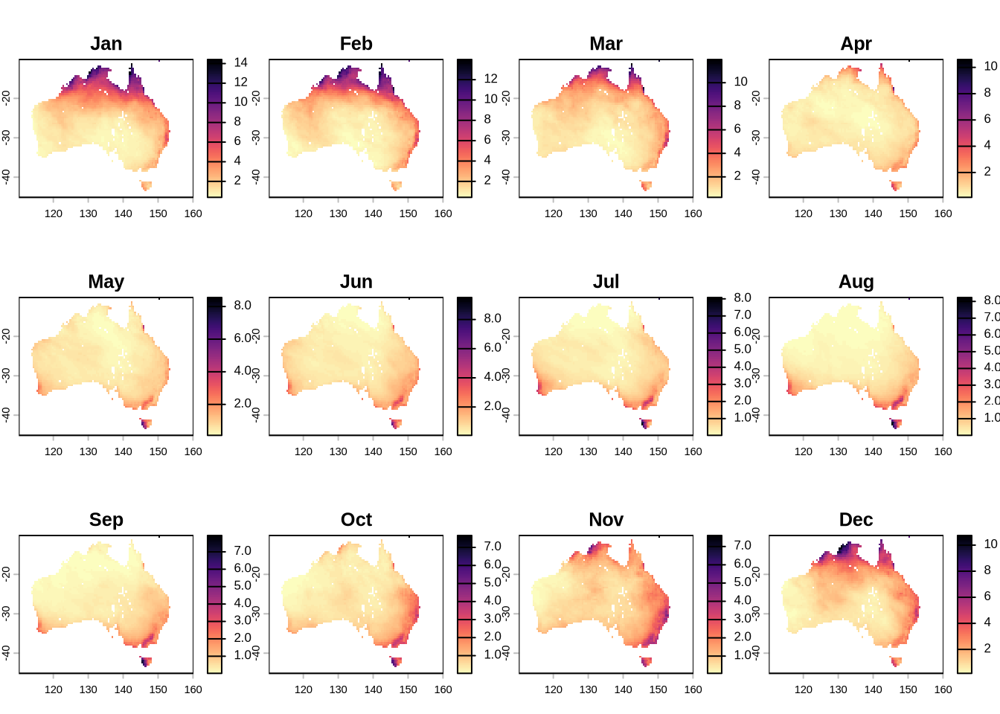
- Calculate precipitation anomalies
# Get the number of years
n <- length(dates)/12
# Create a time series where the 12-month climatological mean repeats for all years
data.clim <- rep(data.12, n)
# Calculate anomalies
data.anom <- data - data.clim
# Have a look at the data
my.col <- rev(map.pal("magma", n = 100))
plot(subset(data.anom, 1:1), col = my.col)
map("world2", add = TRUE)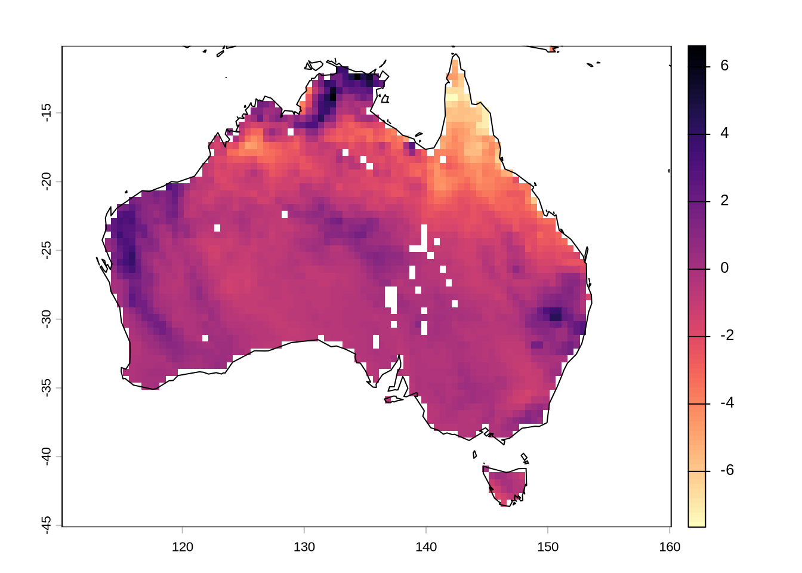
- Detrend precipitation anomalies
# Define a function that removes a linear trend
detrend.fun <- function(x) {
time <- 1:length(x)
# If a grid cell contains NA, then set the result to NA
if (is.na(mean(x))) {
return(rep(NA, length(time)))
} else {
time <- 1:length(x)
linear.model <- lm(x ~ time)
detrended.series <- stats::residuals(linear.model)
return(detrended.series)
}
}
data.anom.detrend <- app(x = data.anom, fun = detrend.fun)
pr.anom.detrend <- data.anom.detrend
# Have a look at the data
my.col <- rev(map.pal("magma", n = 100))
plot(subset(data.anom.detrend, 1:1), col = my.col)
map("world2", add = TRUE)Now we need to do the same for the other variables (near-surface air temperature, net surface radiation, and EVI). We will do each variable in a single chunk. We will not plot any intermediate outputs.
8.4.2 Near-surface air temperature
data <- tas
# Get the dates
# Create a sequence of dates
start_date <- as.Date("2001-01-15")
end_date <- as.Date("2023-12-15")
dates <- seq(from = start_date, to = end_date, by = "month")
# Create raster time series
data.ts <- rts(data, dates)
# Calculate 12-month climatological means
data.12 <- apply.months(data.ts, 'mean')
# Get the number of years
n <- length(dates) / 12
# Create a time series where the 12-month climatological mean repeats for all years
data.clim <- rep(data.12, n)
# Calculate anomalies
data.anom <- data - data.clim
# Define a function that calculates a linear trend
trend.fun <- function(x) {
# If a grid cell contains NA, then set the result to NA
if (is.na(mean(x))) {
return(NA)
} else {
time <- 1:length(x)
linear.model <- lm(x ~ time)
trend <- coef(linear.model)["time"]
return(trend)
}
}
data.anom.detrend <- app(x = data.anom, fun = detrend.fun)
tas.anom.detrend <- data.anom.detrend
# Have a look at the data
my.col <- rev(map.pal("magma", n = 100))
plot(subset(data.anom.detrend, 1:1), col = my.col)
map("world2", add = TRUE)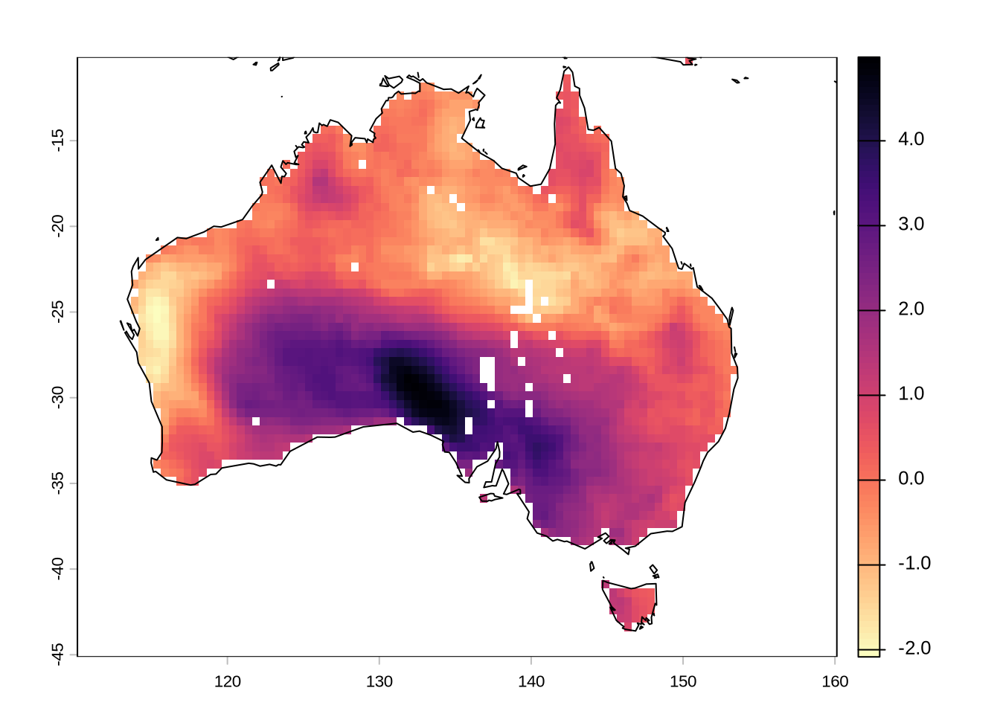
8.4.3 Downwelling solar radiation
data <- rsds
# Get the dates
# Create a sequence of dates
start_date <- as.Date("2001-01-15")
end_date <- as.Date("2023-12-15")
dates <- seq(from = start_date, to = end_date, by = "month")
# Create raster time series
data.ts <- rts(data, dates)
# Calculate 12-month climatological means
data.12 <- apply.months(data.ts, 'mean')
# Get the number of years
n <- length(dates) / 12
# Create a time series where the 12-month climatological mean repeats for all years
data.clim <- rep(data.12, n)
# Calculate anomalies
data.anom <- data - data.clim
# Define a function that calculates a linear trend
trend.fun <- function(x) {
# If a grid cell contains NA, then set the result to NA
if (is.na(mean(x))) {
return(NA)
} else {
time <- 1:length(x)
linear.model <- lm(x ~ time)
trend <- coef(linear.model)["time"]
return(trend)
}
}
data.anom.detrend <- app(x = data.anom, fun = detrend.fun)
rsds.anom.detrend <- data.anom.detrend
# Plot data
min_val <- -50
max_val <- 50
# Have a look at the data
my.col <- rev(map.pal("magma", n = 100))
plot(subset(data.anom.detrend, 1:1), col = my.col)
map("world2", add = TRUE)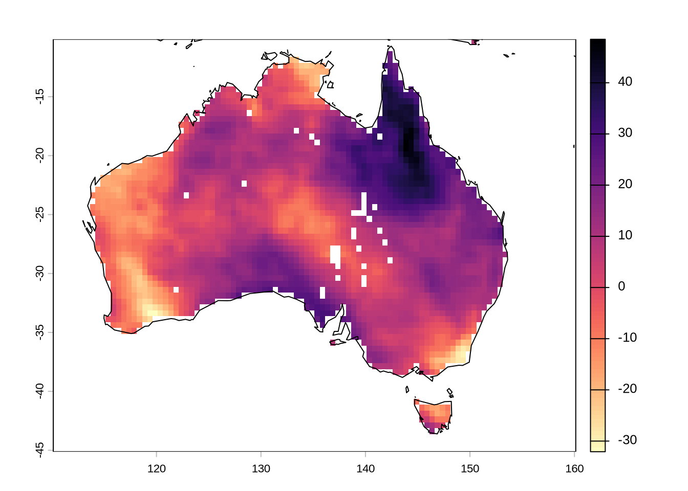
8.4.4 Enhanced Vegetation Index
data <- evi
# Get the dates
# Create a sequence of dates
start_date <- as.Date("2001-01-15")
end_date <- as.Date("2023-12-15")
dates <- seq(from = start_date, to = end_date, by = "month")
# Create raster time series
data.ts <- rts(data, dates)
# Calculate 12-month climatological means
data.12 <- apply.months(data.ts, 'mean')
# Get the number of years
n <- length(dates) / 12
# Create a time series where the 12-month climatological mean repeats for all years
data.clim <- rep(data.12, n)
# Calculate anomalies
data.anom <- data - data.clim
# Define a function that calculates a linear trend
trend.fun <- function(x) {
# If a grid cell contains NA, then set the result to NA
if (is.na(mean(x))) {
return(NA)
} else {
time <- 1:length(x)
linear.model <- lm(x ~ time)
trend <- coef(linear.model)["time"]
return(trend)
}
}
data.anom.detrend <- app(x = data.anom, fun = detrend.fun)
evi.anom.detrend <- data.anom.detrend
# Have a look at the data
my.col <- rev(map.pal("magma", n = 100))
plot(subset(data.anom.detrend, 1:1), col = my.col)
map("world2", add = TRUE)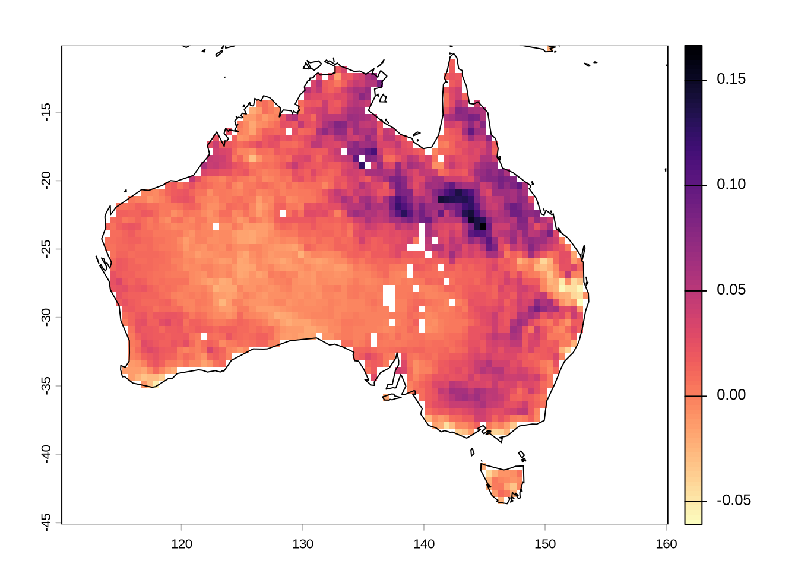
8.5 Causal inference
With the detrended anomalies of the meteorological variables and EVI prepared, you can now assess their statistical associations using Granger causality. This analysis follows a similar approach to the causal inference we previously applied to temperature and albedo in climate model data. Begin by defining a Granger causality function that can be applied to each grid cell.
granger.fun <- function(x) {
# If a grid cell contains NA, then set the result to NA
if (is.na(mean(x))) {
return(NA)
} else {
n <- length(x)
# Get first (a) and second (b) variable
a <- x[1:(n/2)]
b <- x[(n/2+1):n]
# Convert to time series
a <- ts(a)
b <- ts(b)
tsDat <- ts.union(a, b)
tsVAR <- vars::VAR(tsDat, p = 2)
# Apply Granger causality test
p.value <- c(vars::causality(tsVAR, cause = "a")$Granger[3]$p.value)
return(p.value)
}
}Check whether precipitation Granger-causes EVI anomalies.
# Stack your raster objects, where the first part is the cause and the second the response
data <- c(pr.anom.detrend, evi.anom.detrend)
# Assess Granger causality
p.value <- app(x = data, fun = granger.fun)
# Create a boolean map where all locations with p-values < 0.01 equal 1 and all remaining gridcells equal zero
p.value[p.value >= 0.05] <- 0
p.value[p.value > 0] <- 1
p.value.pr <- p.value
plot(p.value, col = c("white", "orange"), main = "Precipitation Granger-causes EVI Anomalies")
map("world2", add = TRUE, interior = FALSE)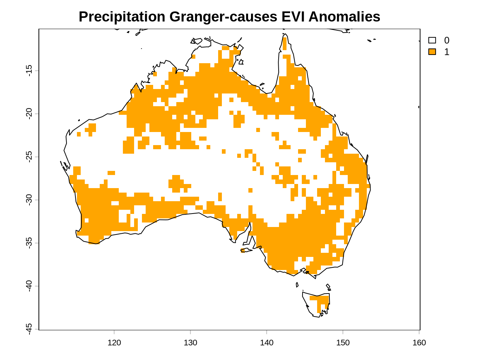
Adjust the code above to check whether temperature Granger-causes EVI anomalies.
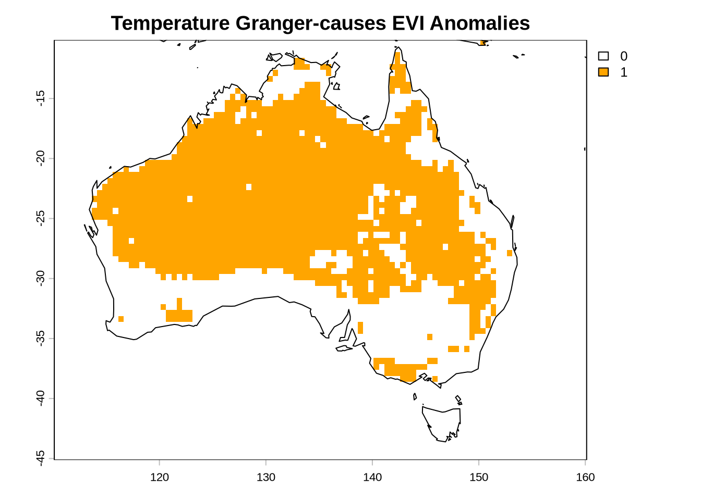
Adjust the code above to check whether downwelling solar radiation Granger-causes EVI anomalies.
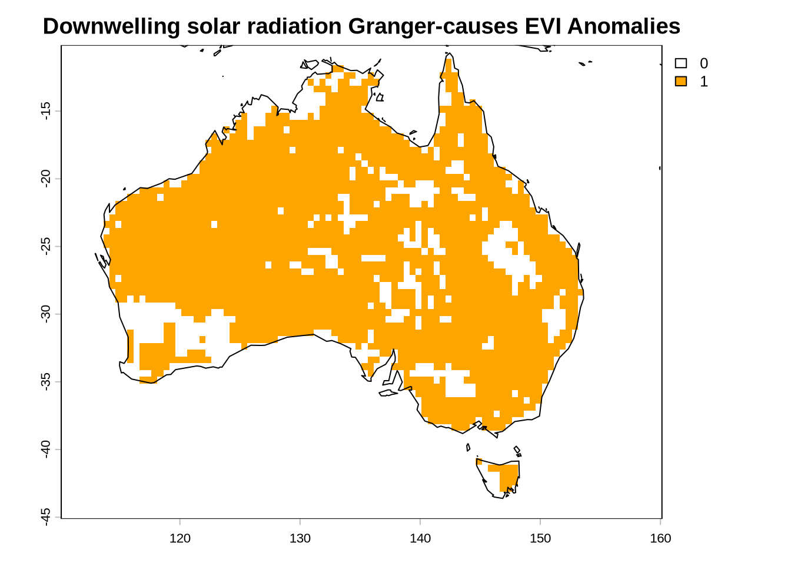
Sum up the previous three results to identify gridcells where all three variables granger-cause EVI. What does the yellow color tell you?
p.value <- p.value.pr + p.value.tas + p.value.rsds
plot(p.value, main = "PR, TAS, and RSDS Granger-causes EVI Anomalies")
map("world2", add = TRUE, interior = FALSE)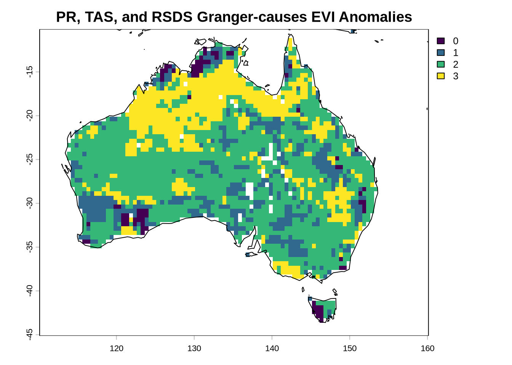
8.6 Cross correlation
Cross-correlation calculates the correlation coefficients between time series for different time lags. This allows us to identify the time lags at which the correlation between variables is strongest. To begin, we’ll apply this approach to a single grid cell by extracting data for a specific location.
lon <- 131
lat <- -17
coords <- matrix(c(lon, lat), ncol = 2, byrow = TRUE)
location <- vect(coords, type = "points")
plot(p.value)
map("world2", add = TRUE, interior = FALSE)
points(location, col = "red", pch = 16, cex = 1.0)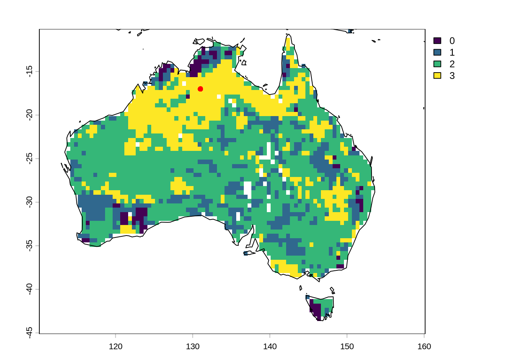
Extract the values for this location and convert them to a time series.
# Extract data for the location
evi.anom.detrend.gc <- extract(evi.anom.detrend, location)
pr.anom.detrend.gc <- extract(pr.anom.detrend, location)
tas.anom.detrend.gc <- extract(tas.anom.detrend, location)
rsds.anom.detrend.gc <- extract(rsds.anom.detrend, location)
# Get the values and drop the layer names
evi.anom.detrend.gc <- unlist(unname(as.vector(evi.anom.detrend.gc)))
pr.anom.detrend.gc <- unlist(unname(as.vector(pr.anom.detrend.gc)))
tas.anom.detrend.gc <- unlist(unname(as.vector(tas.anom.detrend.gc)))
rsds.anom.detrend.gc <- unlist(unname(as.vector(rsds.anom.detrend.gc)))
# Omit the first time step
n <- length(evi.anom.detrend.gc)
evi.anom.detrend.gc <- evi.anom.detrend.gc[2:n]
pr.anom.detrend.gc <- pr.anom.detrend.gc[2:n]
tas.anom.detrend.gc <- tas.anom.detrend.gc[2:n]
rsds.anom.detrend.gc <- rsds.anom.detrend.gc[2:n]
# Make a time series
evi.ts <- ts(evi.anom.detrend.gc)
pr.ts <- ts(pr.anom.detrend.gc)
tas.ts <- ts(tas.anom.detrend.gc)
rsds.ts <- ts(rsds.anom.detrend.gc)
tsDat <- ts.union(evi.ts, pr.ts, tas.ts, rsds.ts)
# Plot time series
plot(tsDat)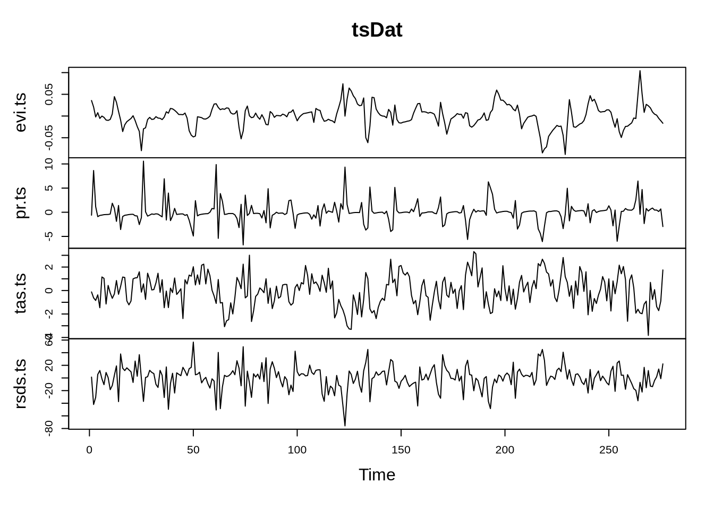
Cross correlation gives the correlation coefficients for different time lags. There are positive lags and negative lags:
- Positive lags: series1 is correlated with past values of series 2
- Negative lags: series2 is correlated with past values of series 1
The Figure below shows you how the correlation coefficient R changes for different time lags.
# Compute cross-correlation
ccf_result <- ccf(evi.ts, pr.ts, lag.max = 12, plot = FALSE)
plot(ccf_result)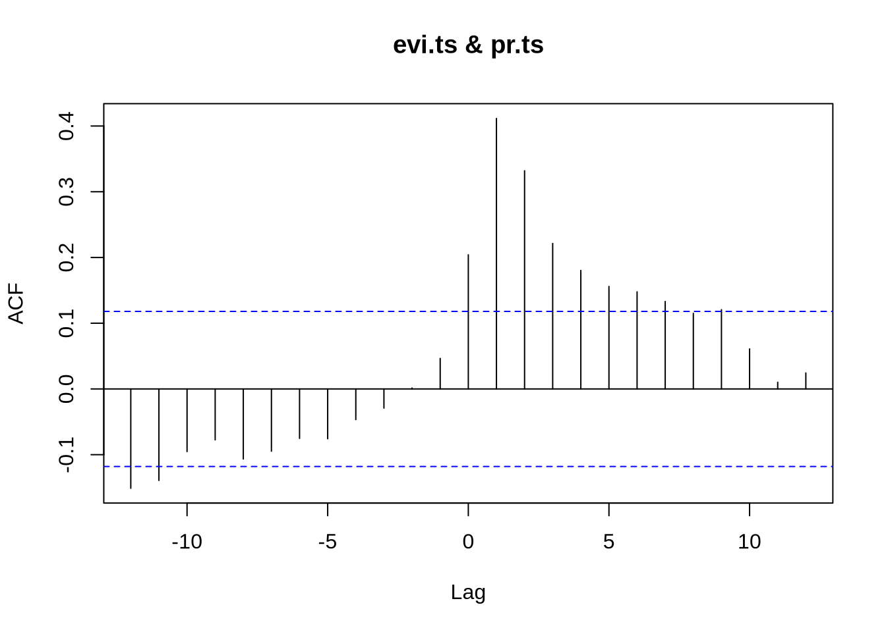
- For what time lag is the correlation coefficient largest?
- Does this time lag apply to EVI or precipitation?
Make a similar Figure but for temperature and then for downwelling shortwave radiation
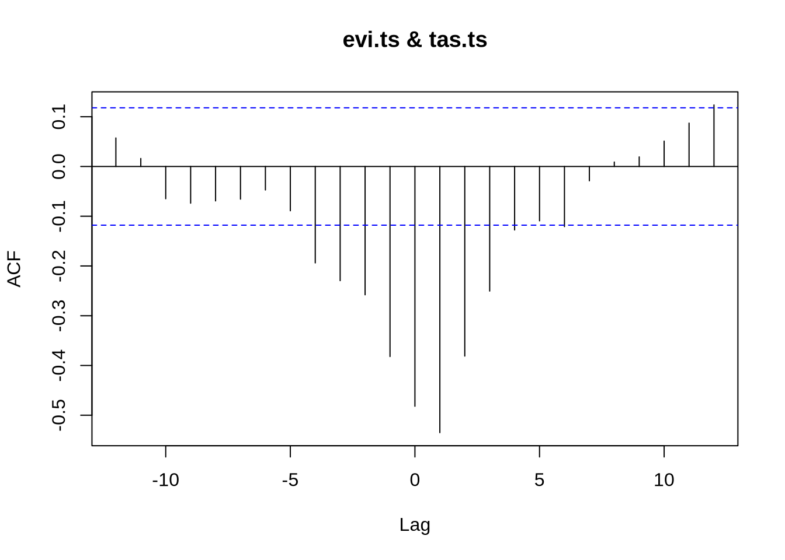
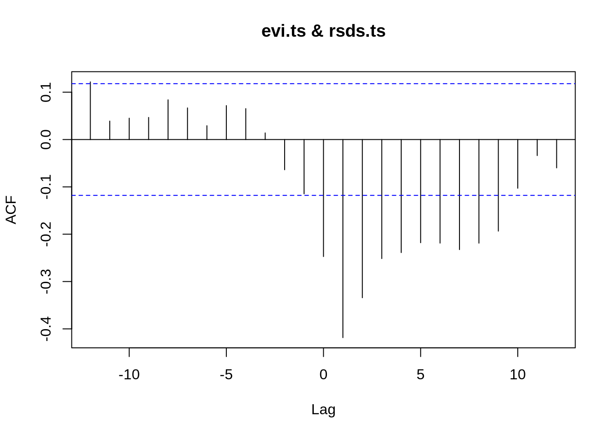
We now aim to create two figures: the first shows the time lags with the highest correlation coefficients, and the second displays the corresponding correlation coefficients. For our specific location, the results are as follows for precipitation:
# Compute cross-correlation
ccf_result <- ccf(evi.ts, pr.ts, lag.max = 12, plot = FALSE)
# Find the index of the maximum correlation
max_index <- which.max(ccf_result$acf)
# Extract the maximum correlation and corresponding lag
max_correlation <- ccf_result$acf[max_index]
corresponding_lag <- ccf_result$lag[max_index]
# Combine results for display
result <- data.frame(Max_Correlation = max_correlation, Lag = corresponding_lag)
print(result)## Max_Correlation Lag
## 1 0.4115275 1Now we want to apply this approach to each grid cell. Let’s define a function that finds the time lag with the largest correlation coefficient.
findLag.fun <- function(x) {
# If a grid cell contains NA, then set the result to NA
if (is.na(mean(x))) {
return(NA)
} else {
n <- length(x)
# Get first (a) and second (b) variable
a <- x[1:(n / 2)]
b <- x[(n / 2 + 1):n]
# Convert to time series
a <- ts(a)
b <- ts(b)
# Conduct cross-correlation
ccf_result <- ccf(a, b, lag.max = 12, plot = FALSE)
# Find the index of the maximum correlation
max_index <- which.max(abs(ccf_result$acf))
# Extract the maximum correlation and corresponding lag
max_correlation <- ccf_result$acf[max_index]
corresponding_lag <- ccf_result$lag[max_index]
# Combine results for display
result <- corresponding_lag
return(result)
}
}Look at the function above. What does max_index <- which.max(abs(ccf_result$acf)) do?
* Why does this line of code include the abs function? (To figure out what abs does, type ?abs in your console) and look at the Help tab on your right-hand-side.
Nex, define a function that gives the corresponding correlation coefficient
findMaxCorr.fun <- function(x) {
# If a grid cell contains NA, then set the result to NA
if (is.na(mean(x))) {
return(NA)
} else {
n <- length(x)
# Get first (a) and second (b) variable
a <- x[1:(n / 2)]
b <- x[(n / 2 + 1):n]
# Convert to time series
a <- ts(a)
b <- ts(b)
# Conduct cross-correlation
ccf_result <- ccf(a, b, lag.max = 6, plot = FALSE)
# Find the index of the maximum correlation
max_index <- which.max(abs(ccf_result$acf))
# Extract the maximum correlation and corresponding lag
max_correlation <- ccf_result$acf[max_index]
corresponding_lag <- ccf_result$lag[max_index]
# Combine results for display
result <- max_correlation
return(result)
}
}Next, let’s apply these functions to our data.
8.6.1 Precipitation
# Stack your raster objects, where the first part is the cause and the second the response
data <- c(evi.anom.detrend, pr.anom.detrend)
# Compute time lags with largest correlation coefficients
timeLags <- app(x = data, fun = findLag.fun)
maxCorr <- app(x = data, fun = findMaxCorr.fun)
maxCorr.pr <- maxCorr
par(mfrow = c(1, 2))
# Plot time lags
breaks <- seq(-12, 12, 1)
my.col <- rev(map.pal("differences", n = length(breaks) - 1))
plot(
timeLags,
main = "Monthly time lags with largest correlation coefficient \n (Precipitation and EVI)",
cex.main = 0.7,
col = my.col,
breaks = breaks,
type = "continuous"
)
map("world2", add = TRUE, interior = FALSE)
points(location, pch = 1, cex = 1.0)
# Plot Correlation Coefficients
breaks <- seq(-1, 1, 0.1)
my.col <- rev(map.pal("differences", n = length(breaks) - 1))
plot(
maxCorr,
main = "Corresaponding Correlation coefficient \n (Precipitation and EVI)",
cex.main = 0.7,
col = my.col,
breaks = breaks,
type = "continuous"
)
map("world2", add = TRUE, interior = FALSE)
points(location, pch = 1, cex = 1.0)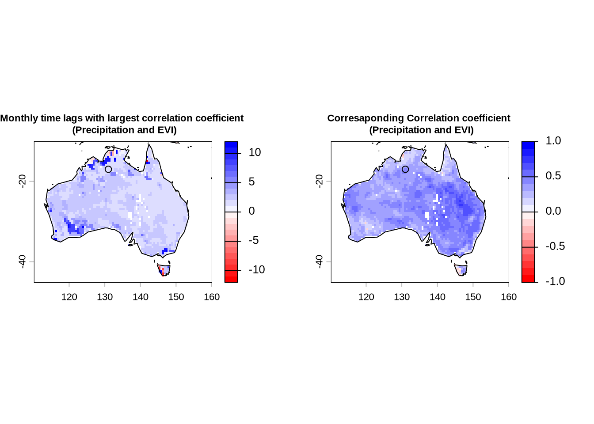
Copy the code from above and modify it as needed for temperature and downwelling solar radiation.
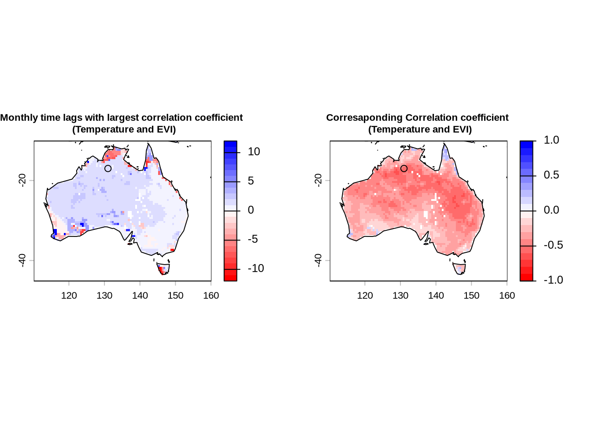
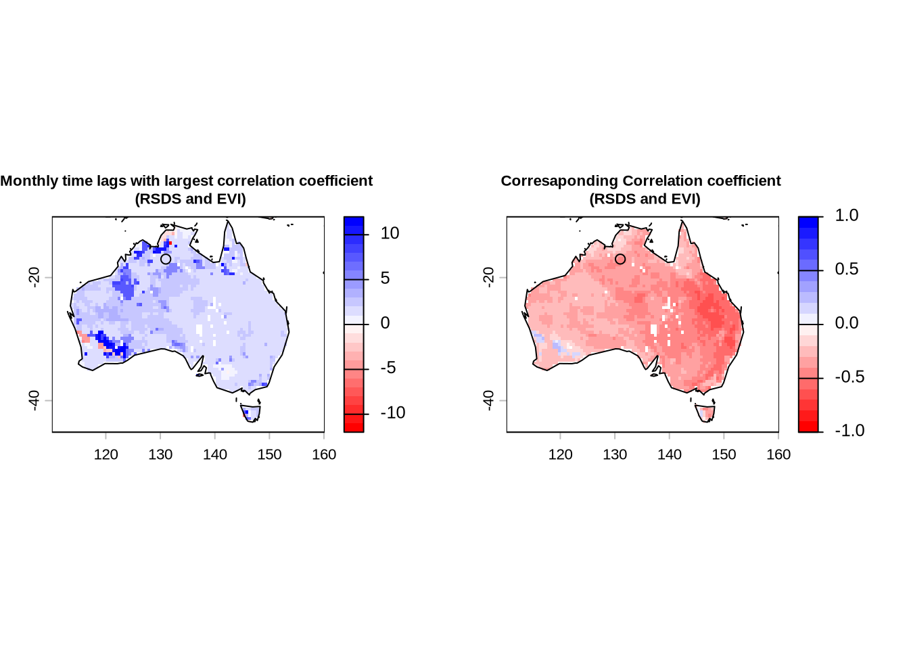
The final step is to evaluate what meteorological variable has a dominatig influence on driving EVI anomalies in each grid cell. For this purpose we will combine the results from our Granger causality test and cross correlation.
maxR2.pr <- maxCorr.pr^2 * p.value.pr
maxR2.tas <- maxCorr.tas^2 * p.value.tas
maxR2.rsds <- maxCorr.rsds^2 * p.value.rsds
stacked_rasters <- c(maxR2.pr, maxR2.tas, maxR2.rsds)
names(stacked_rasters) <- c("PR", "TAS", "RSDS")
# Apply a function to find the index of the max value for each cell
highest_index <- app(stacked_rasters, which.max)
# Set the levels to replace numeric values with the names of the rasters
levels(highest_index) <- data.frame(id = 1:3, name = names(stacked_rasters))
# Plot the result to visualize the highest value index for each cell
plot(highest_index, main = "Met variables that dominate EVI anomaly variability")
map("world2", add = TRUE, interior = FALSE)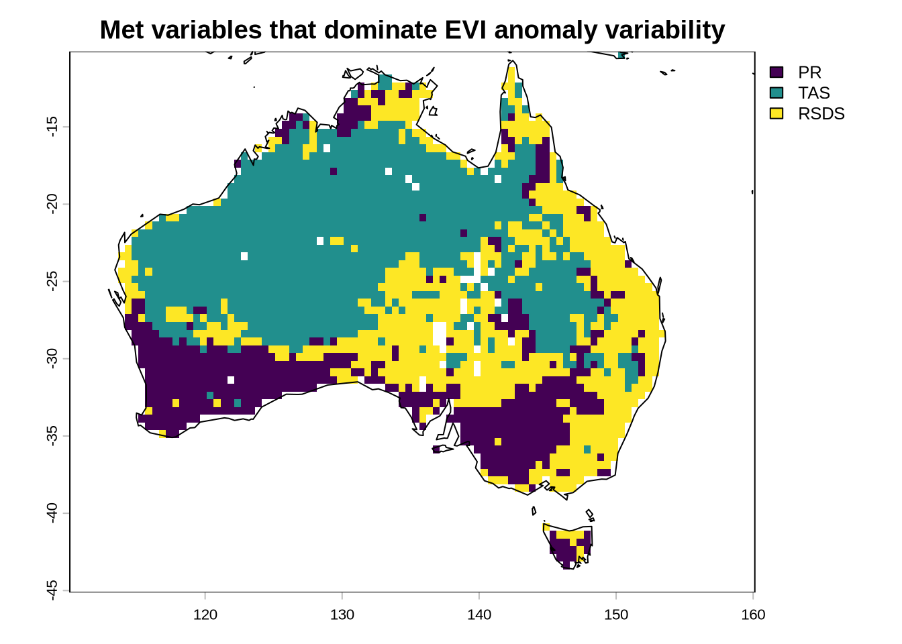
What does this Figure tell you? Have a look at the code above. Explain how exactly we are combining our results from the Granger causality test and cross correlation. In your answers focus on the two lines:
maxR2.pr <- maxCorr.pr^2 * p.value.prhighest_index <- app(stacked_rasters, which.max)